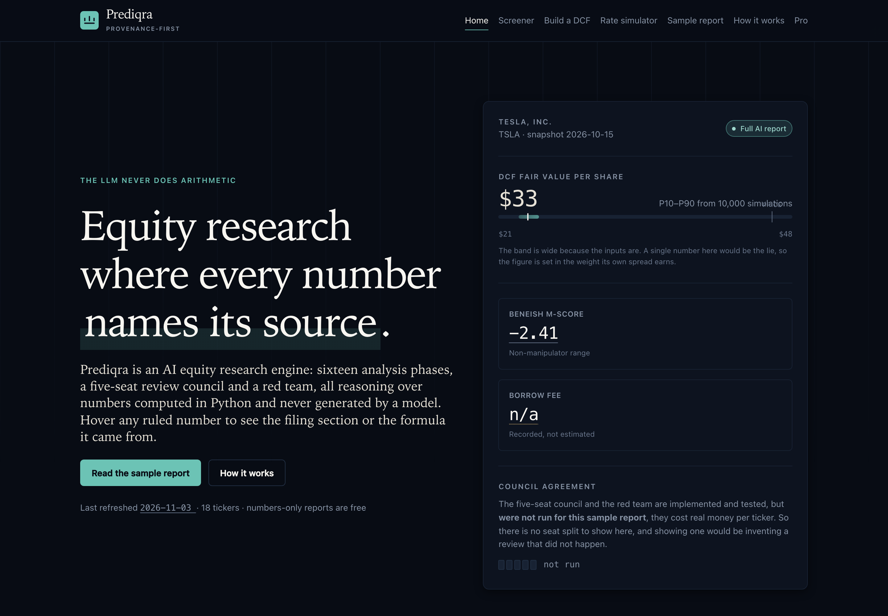
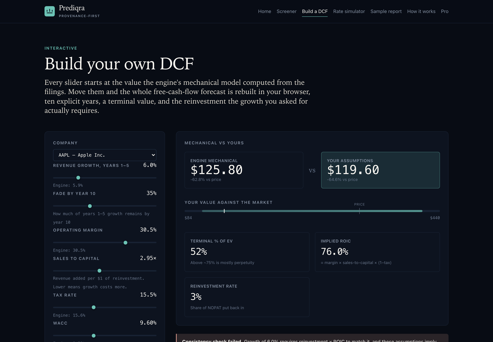
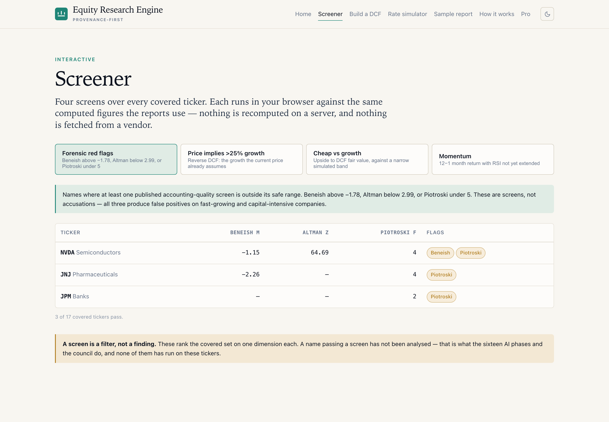
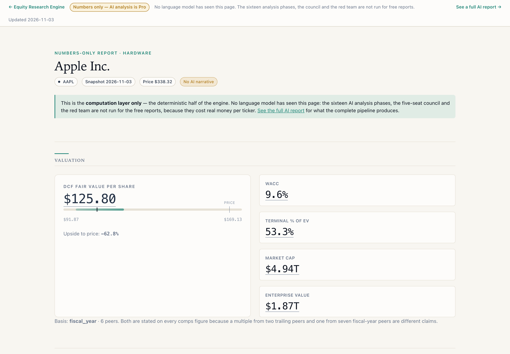
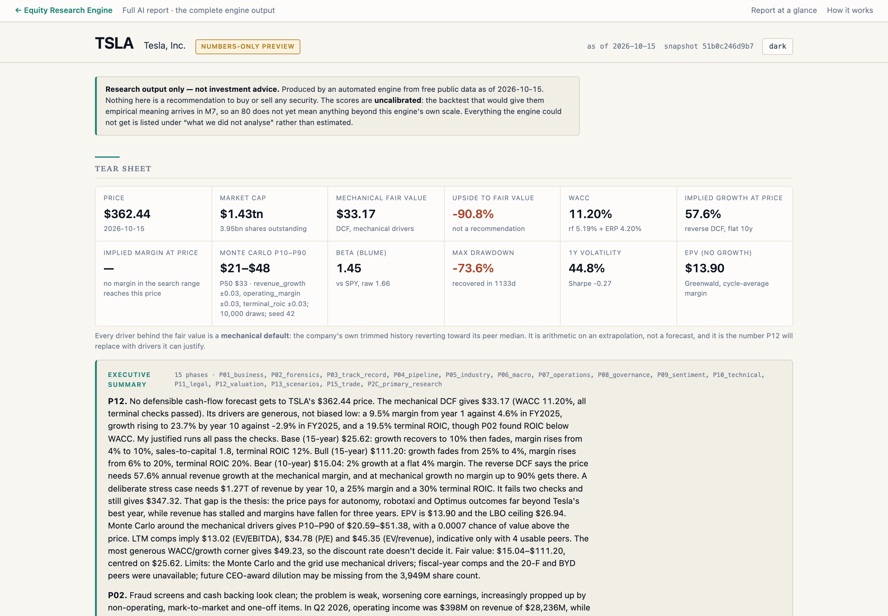

Extra credit project on AI
A finance web app that imports a decade of filings and market data, computes the whole analytical stack in Python, and uses frontier AI only to reason over numbers it is never allowed to invent.
Demo — not offered for sale. Educational project, not investment advice.
The app answers one question about a public company — what is it worth, and how confident can you be? — and shows its work for every number on the way.
01 — Provenance as interface
Every sourced figure carries a thin rule beneath it. Hover or tab to it and a card names where it came from: the filing and Item section, or the named Python function and its formula. A figure the engine could not source gets a dotted amber rule instead, so an absent number never looks like a present one.
02 — Visible confidence
Fair value is a distribution, so it is drawn as one: a band for the simulated P10–P90, a tick for the point estimate, a hairline for the market price. The point estimate's font weight is set by its own spread — a wide band prints lighter. False precision is a typographic choice, so this is the typographic answer to it.
growth = reinvestment × ROIC — the identity that stops a DCF handing out
growth nobody paid for.




The app imports historical data and refreshes with new data on a schedule, with no manual step.
Live for anyone, free
The data import and every calculation. All the numbers on the site — statements, ratios, forensic screens, credit, risk, technicals, factor regressions, DCF, reverse DCF, comps, Monte Carlo — plus the screener, the rate simulator and the Build-your-own-DCF page, which recompute in your browser as you move the sliders. No login, no email, no account.
Runs locally
The full AI analysis, because of API cost. The sixteen analysis phases, the five-seat council, the red team, the bias checks and the verifier are frontier-model calls costing roughly $10–25 per report. Running one per company per day is not something a class project can fund, so the AI stage runs on a local machine on request. The published sample report and the demo video show exactly what it produces.
This split is stated on the site itself, on every free report: each one says plainly that no language model has seen it and links to the full AI report for comparison.
The engine was designed and written with Claude Code (Anthropic), and Claude Opus is the model inside the product. Both roles are worth distinguishing, because they are different uses of AI.
Roughly 133 Python modules and 2,400 tests, built task by task against a written specification. The work included the parts that are easy to skip: point-in-time tests for every loader, accounting identity assertions, a response contract with no numeric field, and a spending ledger that refuses a call before making it.
It also found its own bugs by running the thing. Four examples, all of which only appeared on a company the engine had never analysed before: duplicate SEC accession numbers where EDGAR rebalances its filing index; Form 4 rows with no share count; a single transient HTTP 503 on one filing document aborting an entire eight-minute import; and a date bug where an evening run labelled its data with the next day's date, because the clock was UTC rather than New York — which would have made a point-in-time archive look a session older than it was.
Sixteen phases read the computed figures and reason about them — business and moat, forensic accounting, management track record, industry structure, governance, legal, valuation judgement, scenarios, trade construction. They request new calculations through tool calls rather than performing them.
The most instructive result was a refusal. One phase tried six times to record a catalyst dated "Q3 2026" and the contract rejected it each time, because the field required an exact day. The contract was right not to accept a date the model could not justify — and the design was wrong to force the choice. It now separates where a date came from (confirmed or inferred) from how precisely it is known (day, month, quarter, window, none), so a quarter is a complete answer instead of a failure to be exact. The fix was a design change, not a louder instruction.
Honest note on the sample report
Fourteen of fifteen phases completed. The scenarios phase stopped partway through when the run hit its spending cap — the cap refused the next call rather than overrunning the budget. Its computed scenario valuations are real (they come from tool calls into the Python valuation layer); its narrative is incomplete, and the report says so where that section would be. The council, chairman and red team are implemented and tested but were not run for this sample, so the report shows no council agreement rather than implying one.
This is an educational demonstration. It is not investment advice, and nothing in it is a recommendation to buy or sell any security.
Figures are produced by an automated research engine from public filings and free data sources, and have not been reviewed by a human analyst. The engine records its own data gaps and shows them; it does not fill them. Valuation output is a model result under stated assumptions, not a price target.
Not offered for sale. Several data sources used here permit personal research only and not redistribution, and figures drawn from them are marked on the site. No report produced by this engine is offered for sale.
Past performance does not indicate future results. The prediction log on which any future calibration would be based is deliberately forward-only: it scores a forecast only after its horizon has fully elapsed, so there are no calibration statistics yet and the app says so rather than publishing an unearned number.
Muhammad Somaan Fater (mf373) · Ameya Aneja (aa900) · Kaitlyn Hao (kmh166) · FMKT 256, Fall 2026